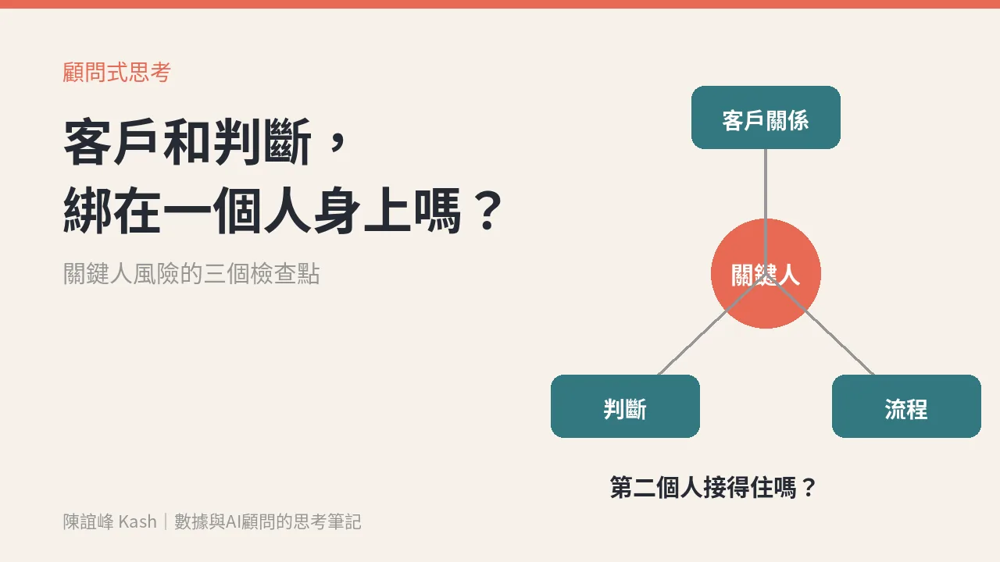

黃仁勳辭職，該檢查的是你自己公司：客戶關係和判斷，綁在一個人身上嗎？
再大的公司，也要面對關鍵人突然離開的那一天。真正要問的不是別人家發生什麼事，而是你家的客戶和判斷，換了人之後還接不接得住。

11 月 12 日，輝達董事會宣布，黃仁勳辭去總裁、執行長和董事職務，即日生效。
這幾天討論很多，原因和細節不是這篇要談的。我想談的是新聞稿裡的另一段。
新聞稿裡，董事會做了哪幾件事
依輝達官方新聞稿：
- 財務長 Colette Kress 暫代執行長，同時繼續擔任財務長，直到正式接班人選出。
- 董事會開始物色正式執行長，內外部人選都會考慮。
- Harvey C. Jones 出任輝達第一位董事長。
- 董事會說，預期公司的營運、對客戶的承諾和產品路線圖會持續，不會中斷。
一家創辦人帶了 33 年的公司，董事會在宣布當天要先講清楚的，是「客戶承諾不會斷」。
這句話，值得每個老闆和主管拿回自己公司問一次。
關鍵人風險，通常藏在三個地方
大部分公司不會遇到這種規模的新聞，但每家公司都有自己的「關鍵人」。一個人請長假、離職、被挖角，生意就跟著晃。
我會從三個地方檢查。
一、客戶關係在誰的腦袋裡？
大客戶的窗口是誰、他在意什麼、上次答應了什麼、預算什麼時候決定。這些如果只存在某位業務的記憶和手機裡，人一走，下一個接手的人就要從頭認識客戶。
二、判斷在誰的腦袋裡？
報價怎麼抓、哪種案子接、哪種不接、客戶說「再想想」時代表什麼。這些判斷常常只在資深主管心裡，沒有寫下來，新人只能每件事都回頭問。
三、流程卡在誰的手上？
某份報表只有一個人會跑，某個系統只有一個人有權限，某個供應商只認一個人。平常是效率，出事時是斷點。
把「這個人知道的」，變成團隊看得到的
這不是要大家寫交接文件寫到天荒地老，而是把最關鍵的部分變成日常就看得到的資料。
客戶處境紀錄，而不是拜訪紀錄。
CRM 不該只記「哪天見了誰」。真正有用的是：客戶現在的處境是什麼、他想走的路徑是什麼、他自己先拍板的答案是什麼，以及我們承諾的下一步是什麼、誰負責、什麼時候。這份紀錄在，換人接手也接得上。數據不是報表，是下一筆生意，也是讓生意在人換了之後還能延續的那份記憶。
判斷規則，寫成三五條就好。
請資深的人把最常做的判斷寫下來，例如「這種條件的案子不接」「報價低於這個區間要先問」。不用完美，有一版就能讓新人先自己判斷一輪。
每個大客戶，有第二個人認識。
重要客戶至少有兩個人跟他互動過、知道他的處境。主管帶人，也要刻意讓第二個人有機會上場。
週一可以先做的一件事
挑一個你最大的客戶，問自己：如果負責這個客戶的人明天不在，誰接得住？他手上有哪些資料可以接？
答案如果是「沒有人」或「要問他本人」，那就是你這週要先停下來處理的地方。
輝達的董事會在宣布當天就能說客戶承諾會持續。你的公司，現在說得出這句話嗎？